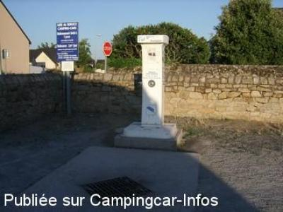
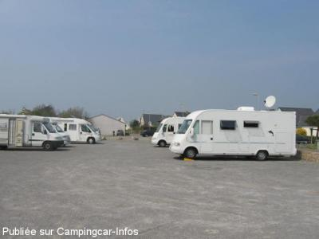
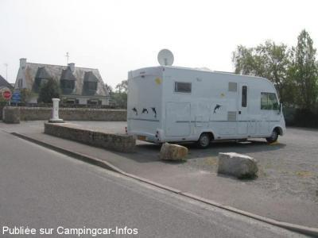

ASN = Aire de services avec stationnement nuit possible de :
LA TURBALLE
(N° 602)
Accès/adresse :
Rue Alphonse Daudet
Aire N°2, derrière la Poste.
44420 LA TURBALLE
Aire N°2, derrière la Poste.
44420 LA TURBALLE
Latitude : (Nord) 47.3487° Décimaux ou 47° 20′ 55′′
Longitude : (Ouest) -2.50806° Décimaux ou -2° 30′ 29′′
Tarif : 2015
Stationnement, services : 5,40 €
Paiement carte bancaire
Type de borne : FLOT BLEU
Services :


Tous commerces
Autres informations :
Ouverte toute l'année
15 emplacements
Stationnement limité 3 nuits
Tel : +33(0)240 118 800
http://www.otsi.la.turballe.fr

Le 06/08/2010 par voyageur 65

Le 23/04/2007 par Dan 78

Le 23/04/2007 par Dan 78
de
pbl
le 21/03/2016 :
Aire bien placée.
Gratuite le 19 mars, jusqu'à réouverture des services (eau).
Par contre la borne est une hérésie.
Qui a pu décider de la placer à un tel endroit?
Le robinet eau propre est face à la route, donc du mauvais côté.
De plus, que l'on soit en marche AV ou AR sur la plateforme, il faudra un tuyau très long.
Aire bien placée.
Gratuite le 19 mars, jusqu'à réouverture des services (eau).
Par contre la borne est une hérésie.
Qui a pu décider de la placer à un tel endroit?
Le robinet eau propre est face à la route, donc du mauvais côté.
De plus, que l'on soit en marche AV ou AR sur la plateforme, il faudra un tuyau très long.
de
charoux
le 13/07/2015 :
Du Nouveau pour cette aire (et celle du Bld de la Falaise). Il y a désormais une barrière, depuis le 9 Juillet 2015. Tarif 5€40/24 Heures(avec l'eau pour le moment). Malheureusement, dimanche après-midi 12, barrière fermée déjà en panne, plus personne ne pouvait sortir ou rentrer, Et oui, électronique!!! no comment...
Du Nouveau pour cette aire (et celle du Bld de la Falaise). Il y a désormais une barrière, depuis le 9 Juillet 2015. Tarif 5€40/24 Heures(avec l'eau pour le moment). Malheureusement, dimanche après-midi 12, barrière fermée déjà en panne, plus personne ne pouvait sortir ou rentrer, Et oui, électronique!!! no comment...
de
schouteten
le 14/10/2014 :
nous avons passe 3 nuits sur cet aire avec beaucoup de chance ,il y avait 1 place qui se libérait car malheureusement envahi par des habitués qui se connaissent tous et on tendance a faire un peu la loi,mais par contre très serviables .a proximité du marché et du port et calme .s'il y a de la place c'est très bien ,sinon pousser jusqu'à pyriac de mer .
nous avons passe 3 nuits sur cet aire avec beaucoup de chance ,il y avait 1 place qui se libérait car malheureusement envahi par des habitués qui se connaissent tous et on tendance a faire un peu la loi,mais par contre très serviables .a proximité du marché et du port et calme .s'il y a de la place c'est très bien ,sinon pousser jusqu'à pyriac de mer .
de
GAYOT
le 04/04/2013 :
de passage au mois de mars aire sale et vidange bouche
de passage au mois de mars aire sale et vidange bouche
de
Pierre Toutous
le 02/10/2012 :
§
de passage fin septembre, le tarif est désormais de 3€/j.Un petit problème, le montage des services est inversé par rapport à l'usage normal; aussi, un camping-cariste m'a reproché de ne pas lire les informations inscrites sur la borne!
En ce lieu, vous rincez votre cassette en usant d'un robinet avec filetage et vous consommer ou faites le plein d'eau sans filetage, donc avec bidon ou arrosoir! J'espère que ce commentaire servira aux utilisateurs ou que Flot Bleu corrige ses inscriptions!
§
de passage fin septembre, le tarif est désormais de 3€/j.Un petit problème, le montage des services est inversé par rapport à l'usage normal; aussi, un camping-cariste m'a reproché de ne pas lire les informations inscrites sur la borne!
En ce lieu, vous rincez votre cassette en usant d'un robinet avec filetage et vous consommer ou faites le plein d'eau sans filetage, donc avec bidon ou arrosoir! J'espère que ce commentaire servira aux utilisateurs ou que Flot Bleu corrige ses inscriptions!
de
flo
le 22/09/2012 :
Aire un peut bruyante mais près de la mer, du port et de la ville
Aire un peut bruyante mais près de la mer, du port et de la ville
de
LES CHAUSONS
le 20/09/2011 :
passer deux fois sur cette aire de camping car il y a C-c indésirables, j' ai filé plus loin dommage car je ne connais toujours pas la Turballe
passer deux fois sur cette aire de camping car il y a C-c indésirables, j' ai filé plus loin dommage car je ne connais toujours pas la Turballe
de
jean Gallien
le 27/09/2010 :
De passage en septembre, impossible de trouver une place. Des camping-cars se garaient en face de l'aire mais à côté des habitations, ce qui n'est pas agréable pour les riverains qui auraient raison de se plaindre. Nous avons pu nous garer sur l'aire de la route de Pen Bron, à 2km, avec les vélos et la piste cyclable, ce n'est pas un gros problème. Enfin, nous avons terminé notre séjour en restant 3 jours au terrain de camping municipal, très bien aménagé, calme, pour 13€ par jour, électricité comprise. Merci à la Municipalité.
De passage en septembre, impossible de trouver une place. Des camping-cars se garaient en face de l'aire mais à côté des habitations, ce qui n'est pas agréable pour les riverains qui auraient raison de se plaindre. Nous avons pu nous garer sur l'aire de la route de Pen Bron, à 2km, avec les vélos et la piste cyclable, ce n'est pas un gros problème. Enfin, nous avons terminé notre séjour en restant 3 jours au terrain de camping municipal, très bien aménagé, calme, pour 13€ par jour, électricité comprise. Merci à la Municipalité.
de
Jean-Pierre 35
le 29/09/2009 :
Il est recommandé d'arriver tôt. A 17 h, c'était complet. Aire calme, nuit tranquille, payante : 2,80€ (mais nous n'avons vu personne), services et eau gratuits. Située à 150m du centre ville, tous commerces. Toilettes publiques près du S.I, au marché couvert et sur le parking VL de Tourlandroux (tous très propres). Mercredi matin, jour de marché nous avons pu déguster du poisson et des crustacés frais et à des prix très raisonnalbles. Merci à la municipalité de La Turballe de si bien nous accueillir.
Il est recommandé d'arriver tôt. A 17 h, c'était complet. Aire calme, nuit tranquille, payante : 2,80€ (mais nous n'avons vu personne), services et eau gratuits. Située à 150m du centre ville, tous commerces. Toilettes publiques près du S.I, au marché couvert et sur le parking VL de Tourlandroux (tous très propres). Mercredi matin, jour de marché nous avons pu déguster du poisson et des crustacés frais et à des prix très raisonnalbles. Merci à la municipalité de La Turballe de si bien nous accueillir.
de
Dan 78
le 23/04/2007 :
Bonjour. De passage la semaine du 14 au 21/04/2007 à la Turballe, je pense qu'il est tout à fait normal de voir le long de la plage et du port des interdictions de statinner aux c.cars. La commune offre trois aires de stationnement, chose très rare dans la région. Merci à la Mairie.
Bonjour. De passage la semaine du 14 au 21/04/2007 à la Turballe, je pense qu'il est tout à fait normal de voir le long de la plage et du port des interdictions de statinner aux c.cars. La commune offre trois aires de stationnement, chose très rare dans la région. Merci à la Mairie.
de
Bourry
le 21/04/2006 :
Parking trés propre. Commerces et ville à proximité . Seul problème pas de pancarte d'indication.
Parking trés propre. Commerces et ville à proximité . Seul problème pas de pancarte d'indication.